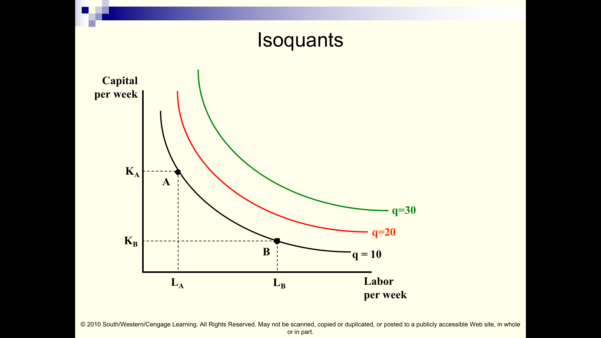

5 Production and costs (brief) (L4-L5)
5.1 Coverage
Some key goals of these chunk
- Better understand how economists depict a firm’s production function
- … and how a firm can ‘trade off one input for another’ in the producing a particular output
- … and why the production function may have increasing returns to scale or diminishing returns to scale
Our coverage of the production function, inputs, and the firm’s cost structure is somewhat brief.
Key issues are highlighted here.
I’m giving you the ‘basic idea’ so we can continue the story.
Recommendation: Read the following parts of NS Text ch 6-7; you can skip the parts not mentioned and skip the applications
NS Ch 6:
Production function (at least the basic idea)
Returns to scale (!)
Basic cost concepts (!)
‘Cost minimising input choice’ (understand key principle of ‘bang-for-the-buck’ equalisation)
Cost curves (!)
… to help understand the key concepts in following chunks
In standard neo-classical economics the firm (each firm) is treated as a unified decisionmaker whose goal is to maximise profits
… this profit-maximization assumption ‘leads to predictions of firm behaviour which are time and again bourne out by the evidence’53
5.2 The Firm’s Production function
- A production function is a mathematical relationship between inputs (capital, labour, materials, etc.) and outputs.
\[q = f( K, L, M, ...)\]
\[q = f(K, L)\]
E.g.,
a particular Cobb-Douglas in two inputs, \(q =2L^{1/3}K^{2/3}\)
“Leontief” fixed proportions: \(Q=\min(a_{1}X_{1},a_{2}X_{2},\dotsc ,a_{n}X_{n})\)
“O-ring” production (Michael Kremer, recent Nobel memorial prize winner)
5.2.1 A more formal treatment
Most general depiction: ‘Production possibility set’ (see footnote)54
A reasonably general depiction of a production function (JR notation) maps from the vector of inputs \(\mathbf{x}\) to a single output \(y\): \(f(\mathbf{x})\).55
Some standard assumptions (JR Ass 3.1)
Production function \(f: \mathbb{R}^n_+ \rightarrow \mathbb{R}_+\) is continuous strictly increasing and strictly quasiconcave on \(\mathbb{R}_+\), and \(f(\mathbf{0})=0\).
Compare these assumptions to our assumptions over the consumer’s utility function.
(Back to the simpler treatment)
5.3 Marginal product
- Marginal product
- The additional output that can be produced by adding one more unit of a particular input while holding all other inputs constant.
Marginal Product of Labour: \(MP_L\)
- Slope of production function in units of labour (holding capital etc constant)
\[MP_L=\frac{\partial}{\partial L}f(K,L)\]
- Similarly for Marginal Product of Capital \(MP_K\)
5.4 Output curves, marginal product curve, average product


Given its production choice, the firm tries to produce it at the minimum cost - This resembles a consumer maximizing utility subject to budget constraints56
One reason why you might care about input choice and production functions:
How will you earn a living in the future?
Production may be a function of capital (esp ‘high-tech’), materials, and various types/skill-levels of labour. We’ll note that in a competitive market each input, including workers, is paid based on their marginal contribution to output, given the firms’ optimising choice of inputs.
If production functions (or costs of various inputs) change ‘your kind of labour’ may become less productive (per hour) as part of this process, meaning wages must fall. If they fall low enough people may not want to work. If these are ‘sticky’ or legally prevented from falling firms may reduce employment of ‘your kind of labour.’
2020 US presidential candidate Andrew Yang is making this sort of argument, and he claims the best response is a tax-funded ‘universal basic income’. Do you think he is correct?
5.5 Cost minimizing input choice
Typically, a particular quantity (\(q\)) could be produced with several different combinations of inputs. E.g., smoothies are produced with labour (employees), technology (blenders, robots perhaps, refrigerators), and raw materials (fruit, ice, yoghurt etc).
Which combination will the firm choose?
\[q = f(K,L,...)\]
Main point: Whatever \(q\) it wants to produce, the firm uses the minimum cost combination of inputs!
It chooses inputs to get the best ‘bang for the buck’;
\(\rightarrow\) where the input mix is optimal, each input yields the same marginal product per £
Key definitions and results:
These results follow from the same logic we used when considering utility maximisation!
Consider any combination of (say, two) inputs (capital and labor, K and L) and the output this yields.
At any such point the firm can ’substitute capital for labour (and hold production constant)
This rate it can substitute one for another, at a certain point (K,L) is called the ‘(marginal) rate of technical substitution’ or \(RTS(K,L)\)
This will equal the ratio of the ‘marginal product of labour’ (\(MP_L\)) and the ‘marginal product of capital’ (\(MP_K\))
When the firm chooses inputs optimally (and where it uses both), it chooses K and L to set the \(MRT(K,L)\) equal to the price ratio of these inputs (\(w/r\)… wages \(w\) per unit of for labor, rent \(r\) per unit of capital).
It will make these choices to attain the “same bang for the buck at optimal choices \(K^*\) and \(L^*\)”, i.e.:57
\[\frac{MP_K(K^*,L^*)}{r}= \frac{MP_L(K^*,L^*)}{w}\]
Also, if markets for labour and capital are (perfectly) competitive, when we consider the price of each outputs:
this ‘bang for the buck’ (measured in terms of revenue) will be the same for all inputs and for all production processes
Inputs (workers, owners of capital) in every industry will be paid based on their (marginal) productivity …
- E.g, if workers were being paid less than their marginal productivity, they would be ‘hired away’ by another producer, ultimately raising wages until these equal the marginal productivity, the marginal contribution to revenue
This is very similar to the consumer optimization we discussed. For a given total input cost, the firm wants to produce as much as possible. A better way of thinking about this is that for a given production, the firm wants to incur as low a cost as possible. However, there is no ‘hard budget constraint’ as in the consumer optimisation case. The firm’s output choice will be chosen to maximise its profit, with no constraints other than ‘non-negativity’.
Next we depict this graphically and in more detail
5.6 Isoquant maps, rate of technical substitution (RTS)
The ‘isoquant’ depicts all combinations of inputs that yield the same amount of output.
‘Iso’ probably means ‘the same’ in some language. So ‘isoquants’ connect all points, all combinations of output that produce the same ‘quant’(ity.)
This is depicted below.

Suppose points A and B produce the same output.

…They will then be on the same isoquant
How do these isoquants curves display ‘diminishing marginal product’ of each input?"58
The slope of these is called the ‘Rate of Technical Substitution,’ to be defined shortly

- Marginal rate of technical substitution (M)RTS
- The amount by which one input can be reduced when one more unit of another input is added while holding output constant
RTS = - slope of the isoquant
|(change in capital) / (change in labor)|
\[MRTS = MP_L/MP_K\]
- RTS is the ratio of marginal products
Note: This is fundamentally similar to the reason why the MRS was the ratio of marginal utilities!
Makes sense:
- If MPL is large I can give up much K, because getting more L adds a lot of production
- If MPK is large I cannot give up as much K to get more L, because reducing K reduces output a lot
Diminishing MRTS is a common assumption
5.6.1 Graphical depiction: isoquant and isocost … optimisation
Just as a consumer choosing to consume a positive amount of two goods will find the point X,Y on her budget constraint where the indifference curve through this point has the same slope (i.e. X,Y that has MRS(X,Y) equal to the price ratio) …
So a firm will choose a point on some ‘isocost curve’ (all pairs of inputs costing a certain amount) where the ‘isoquant’ (all pairs of inputs producing the same quantity) has the same slope. The same marginality argument holds – if this is not the case, the firm could produce more at the same cost (or the same at a lower cost).

If the firm depicted above
- chooses to produce 40 hamburgers per hour
- given the 1-1 price ratio depicted (price of grill per hour = price of workers per hour)
- given its production function (which is described, in part, by the ‘isoquant’)
\(\rightarrow\) It will choose to use 4 grills and 4 workers per hour: this is the minimum-cost input choice for this level of output
The other points on the same isoquant (inputs yielding 40 hamburgers/hour) all cost more. Dually, the other points on the same isocost line (costing $40/hour) all produce less.
Such optimum input choices (where both inputs are used) must occur at points where the isocost is tangent to the isoquant… the ‘rate at which one can trade off between the inputs at no cost’ equals the ‘rate at which inputs tradeoff to hold the output constant.’ The intuition is the same as in the consumer case. (But again, the difference is that the firm will also choose its output level, there is no equivalent of the ‘budget constraint’.)
5.7 The cost function
Summing up: Optimisation (given a production function and input prices)…
yields a (minimum) cost for every output \(q\) a firm chooses to produce.
I.e., the firm’s ‘cost function.’59
Formally (JR notation)
The cost function, defined for all input prices \(\mathbf{w}>>\mathbf{0}\) and all output levels \(y\in f(\mathbb{R}^n_+)\) is the minimum-value function:
\[c(w,y)\equiv \min_{\mathbf{x}\in\mathbb{R}_+^n}\mathbf{w\cdot x}\text{ s.t. } f(\mathbf{x})\geq y\]
If the ‘conditional nput demand’ \(\mathbf{x}(\mathbf{w},y)\) solves the cost-minimisation problem, then:
\[c(\mathbf{w},y)=\mathbf{w}\cdot\mathbf{x(w},y)\].
5.8 Types of costs (‘Basic cost concepts’)
- Fixed costs (FC)
- Costs that must be regularly incurred to remain in business (i.e., for any level of output), but that do not vary with the level of output
- Variable costs (VC)
- Costs that increase with the quantity produced.
- Sunk costs
- Costs that have been incurred in the past that can never be recovered.
- Sunk costs should not enter into any economic decisions.
- FC from previous years are sunk costs; FC for future years are not.
In 2019 we are skipping the discussion of the short-run here: we will assume all inputs can be adjusted.
Total cost function: \(c(q)\) or \(TC(q)\).
Total costs are fixed costs plus variable costs
Fixed costs: must be incurred to produce even the first unit (e.g., hire factory space)
Variable costs: increase as one produces more units
Marginal cost \(MC(q)=c'(q)\): rate that costs increase in quantity; the derivative of the cost function
- cost of producing one additional unit (given that you already produced q units)
‘Average cost’ \(AC=c(q)/q\): the production cost per unit produced
Average costs are also the total ‘rise over run’ for the TC curve at a given quantity as the firm optimally chooses its inputs.
Average costs (for a firm) may be increasing or decreasing in quantity. This depends on the returns to scale.
5.9 Returns to scale
Note: I will add a formal depiction of returns to scale here, and explain how to determine the returns to scale for a particular function
Are bigger firms always more efficient? Do things get cheaper to produce the more we produce?
If so, what limits the size of firms? I.e., why don’t we see only one firm in each industry?
- Returns to scale
- The rate at which output increases in response to a proportional increase in all inputs.
- Constant returns to scale (CRS)
- If inputs increase by a factor of X, output increases by a factor equal to X.
- E.g., doubling all inputs (labour, capital, land, etc) means exactly doubling all outputs
- Increasing returns to scale (IRS)
- If inputs increase by a factor of X, output increases by a factor greater than X.
- Decreasing returns to scale (DRS)
- If inputs increase by a factor of X, output increases by a factor less than X.
Increasing average costs \(\leftrightarrow\) Decreasing returns to scale
Decreasing average costs \(\leftrightarrow\) Increasing returns to scale
Constant average costs \(\leftrightarrow\) Constant returns to scale
Consider: why/when would we expect DRS/IRS/CRS? (We discuss this further below.)
The shape of the marginal cost curve depends on the production function
Constant returns to scale: constant MC (and no FC)
Decreasing returns to scale: increasing MC
Increasing returns to scale: decreasing MC (and/or constant FC)


5.9.1 Arguments/reasons for scale (dis)economies
IRS
- Fixed costs (incorporation, buildings, management, planning, R&D) spread over more units
- Should always be able to at least ‘double everything’ and produce twice as much? (so at least CRS)
- Scale allows specialisation
DRS
- Limited resources in whole (or local) economy; costs begin to rise
- Managerial issues and coordination problems, bigger ‘centre’ to lobby for favours
- (See ‘theories of the firm’)
- Harder to give incentives to top manager/CEO?
- Larger firm \(\rightarrow\) harder to make CEO liable for losses
Advanced footnote60
Computing… If you know the production function, how do you know if the ‘returns to scale’ are increasing or decreasing?
Slide in a constant \(\alpha>1\) next to each input, simplify, and compare to the original production
E.g.:
\[Q(L,K) = L^{1/4}K^{1/2}\]
. . .
\[Q(\alpha L, \alpha K) = (\alpha L)^{1/4}(\alpha K)^{1/2}\] \[=\alpha^{1/4}\alpha^{1/2}L^{1/4}K^{1/2}=\alpha^{3/4}L^{1/4}K^{1/2}=\alpha^{3/4}Q(L,K)\]
\(\rightarrow\) So if we increase inputs by \(\alpha\) here, we increase output by \(\alpha^{3/4}<\alpha\), so DRS everywhere for this production function.
Note that this case was easy; returns to scale may not be constant: there can be IRS at one point and CRS or DRS at another. You can always just try doubling everything and see if output doubles but this will only tell you the returns to scale in this particular range.
5.9.2 Interesting case: ‘Minimum efficient scale’ (MES) production
- E.g., rental costs/maintenance of 3D printer: £10,000 per year (no matter how much is printed)
- Each printer can print up to 100 artificial heads per year
- If we produce less than 100 heads per year, cost/head not minimised
- Here MES is 100
- You should produce in multiples of 100, but could be CRS for each multiple of 100


- As we shall see, in a perfectly competitive market, firms must produce as cheaply as all other firms, or they must exit
5.10 Some suggested practice problems from Nicholson and Snyder Chapter 6 (12th ed)
‘Problems’:
6.1, 6.3, 6.5, 6.7 (very useful)
See problem set (when posted)
Give one reason why production may exhibit ‘increasing returns to scale’ and one reason why it may have ‘decreasing returns to scale’.“,”gray")`
Quote from Jehle and Remy’s ‘Advanced Microeconomic Theory’, 2011↩
\(Y \in \mathbb{R}^m\) where each vector \(\mathbf{y}=(y_1,...y_m) \in Y\) is a production plan whose components are the amounts of various inputs and output. (From JR)↩
But note that we may need multi-output multivalued functions to depict ideas such as economies of scope within a firm.↩
A major difference: a firm also chooses the level of output, while the consumer has a fixed budget constraint … we return to this in later sections.↩
Of course there can be ‘corner solutions’ as in the consumer case, where you optimally use none of one input↩
Ans: Slope gets steeper as we move towards more capital, less labour Implying with more K we need to add more and more K to make up for a loss of a small amount of L. Slope shallower with more L, less K … similar point↩
By the way this is the analogue to the consumer’s expenditure function’↩
I think the first point is valid, but it doesn’t suggest that 2 firms would be more efficient than 1; these DRS would set in as a function of total output, not a single firm’s output. The second and third arguments are complicated and perhaps harder to justify. The case for DRS is unproven, IMHO↩